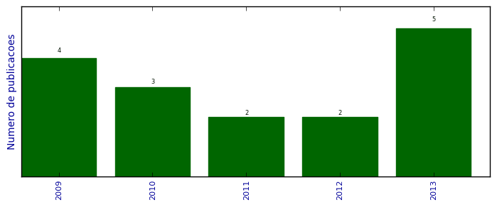

UFSM - Análise do Lattes
Trabalhos completos publicados em anais de congressos

Número total de itens: 16
(A1: 0, A2: 0, B1: 1, B2: 0, B3: 0, B4: 3, B5: 0, C: 0, Qualis não identificado: 12)
Legenda Qualis:
- Publicação para a qual o nome exato do Qualis foi identificado: Qualis <estrato>
- Publicação para a qual um nome similar (não exato) do Qualis foi identificado: Qualis <estrato> (nome similar)
- Publicação para a qual nenhum nome do Qualis foi identificado: Qualis não identificado (nome usado na busca)
2013
| 1. | CASSALES, G. W. ; HOFFMANN, G. F. ; VIEIRA, J. C. ; CHARAO, A. S.. Paralelização híbrida de cálculo de probabilidades utilizando redes bayesianas. Em: XII Simpósio de Informática da Unifra (SIRC 2013), p. 26-31, 2013. [ citações Google Scholar | citações Microsoft Acadêmico | busca Google ] Qualis: Não identificado (XII Simpósio de Informática da Unifra (SIRC 2013)) |
| 2. | GOMES, V. C. F. ; VELHO, H. F. C. ; CHARAO, A. S.. A Fast Poisson Solver for Hybrid Reconfigurable System. Em: 9th International Symposium on Applied Reconfigurable Computing, p. 47-58, 2013. [ citações Google Scholar | citações Microsoft Acadêmico | busca Google ] Qualis: Não identificado (9th International Symposium on Applied Reconfigurable Computing) |
| 3. | MOURA, J. L. ; LUNARDI, G. M. ; CHARAO, A. S. ; BARCELOS, P. P. A. ; STEIN, B. O.. Gestão de Processos de Negócio em Curso de Sistemas de Informação: Relato de Experiência Utilizando Software Livre. Em: IX Simpósio Brasileiro de Sistemas de Informação (SBSI), p. 206-217, 2013. [ citações Google Scholar | citações Microsoft Acadêmico | busca Google ] Qualis: B4 (Simpósio Brasileiro de Sistemas de Informação) |
| 4. | STEFFENEL, LUIZ ANGELO ; FLAUZAC, OLIVIER ; CHARAO, ANDREA SCHWERTNER ; BARCELOS, PATRICIA PITTHAN ; STEIN, BENHUR ; NESMACHNOW, SERGIO ; PINHEIRO, MANUELE KIRSCH ; DIAZ, DANIEL. PER-MARE: Adaptive Deployment of MapReduce over Pervasive Grids. Em: 2013 Eighth International Conference on P2P, p. 17, 2013.  [ citações Google Scholar | citações Microsoft Acadêmico | busca Google ] Qualis: Não identificado (2013 Eighth International Conference on P2P) |
| 5. | VIEIRA, J. C. ; CASSALES, G. W. ; FAE, F. ; CHARAO, A. S.. Paralelização de Ray Tracing utilizando Intel Cilk Plus. Em: XII Simpósio de Informática da Unifra (SIRC 2013), p. 14-19, 2013. [ citações Google Scholar | citações Microsoft Acadêmico | busca Google ] Qualis: Não identificado (XII Simpósio de Informática da Unifra (SIRC 2013)) |
2012
| 1. | BARBOSA, F. P. ; CHARAO, A. S.. Impact of pay-as-you-go Cloud Platforms on Software Pricing and Development: A Review and Case Study. Em: ICCSA 2012 - 12th International Conference on Computational Science and Its Applications, v. 7336, p. 404-417, 2012. [ citações Google Scholar | citações Microsoft Acadêmico | busca Google ] Qualis: B1 (International Conference on Computational Science and its Applications) |
| 2. | TIETZMANN, D. K. ; CHARAO, A. S. ; BEAL JUNIOR, J. C.. Uma extensão do Eclipse para auxiliar na refatoração de código sequencial em código paralelo com OpenMP. Em: Workshop de Software Livre, 2012. [ citações Google Scholar | citações Microsoft Acadêmico | busca Google ] Qualis: Não identificado (Workshop de Software Livre) |
2011
| 1. | BARBOSA, F. P. ; CHARAO, A. S.. Uma análise do impacto das plataformas pay-as-you-go de computação em nuvem na construção e precificação de software. Em: CLEI 2011 - Conferencia Latinoamericana de Informática, 2011. [ citações Google Scholar | citações Microsoft Acadêmico | busca Google ] Qualis: B4 (Conferencia Latinoamericana de Informática) |
| 2. | TIETZMANN, D. K. ; RISSETTI, G. ; CHARAO, A. S. ; PIVETA, E. K. ; PETRY, A. ; SOUZA, J. R.. Refatorações para Melhoria da Legibilidade de Código Fortran. Em: WSL'11 - Workshop de Software Livre, 2011. [ citações Google Scholar | citações Microsoft Acadêmico | busca Google ] Qualis: Não identificado (WSL'11 - Workshop de Software Livre) |
2010
| 1. | BONIATI, B. B. ; RISSETTI, G. ; CHARAO, A. S. ; PIVETA, E. K.. Extensões para Refatoração de Código Fortran no Eclipse. Em: Workshop de Software Livre, p. 74-79, 2010. [ citações Google Scholar | citações Microsoft Acadêmico | busca Google ] Qualis: Não identificado (Workshop de Software Livre) |
| 2. | CARISSIMI, A. S. ; GEYER, C. F. R. ; MAILLARD, N. B. ; NAVAUX, P. O. A. ; CAVALHEIRO, G. G. H. ; PILLA, M. L. ; YAMIN, A. ; CHARAO, A. S. ; STEIN, B. O. ; ROSE, C. A. ; FERNANDES, G. ; FERRETO, T. ; ZORZO, A.. Energy-Aware Scheduling of Parallel Programs. Em: Conferencia Latino Americana de Computación de Alto Rendimiento, p. 95-108, 2010. [ citações Google Scholar | citações Microsoft Acadêmico | busca Google ] Qualis: Não identificado (Conferencia Latino Americana de Computación de Alto Rendimiento) |
| 3. | PEREIRA, A. ; PINTO, V. G. ; CHARAO, A. S.. CertificaPET: Sistema Gerenciador de Certificados de Eventos em Formato Digital. Em: Workshop de Software Livre, p. 94-99, 2010. [ citações Google Scholar | citações Microsoft Acadêmico | busca Google ] Qualis: Não identificado (Workshop de Software Livre) |
2009
| 1. | BONIATI, B. B. ; CHARAO, A. S. ; STEIN, B. O.. Automação de Refatorações para Programas Fortran de Alto Desempenho. Em: Simpósio de Sistemas Computacionais de Alto Desempenho - WSCAD-SSC, 2009. [ citações Google Scholar | citações Microsoft Acadêmico | busca Google ] Qualis: Não identificado (Simpósio de Sistemas Computacionais de Alto Desempenho - WSCAD-SSC) |
| 2. | KREUTZ, D. L. ; CHARAO, A. S.. FlexVAPs: a system for managing virtual appliances for heterogeneous virtualized environments. Em: IEEE/IFIP 6th Latin American Network Operations and Management Symposium, p. 1-12, 2009. [ citações Google Scholar | citações Microsoft Acadêmico | busca Google ] Qualis: B4 (Latin American Network Operations and Management Symposium) |
| 3. | PEREIRA, A. ; COGO, V. V. ; CHARAO, A. S.. Frameworks para Desenvolvimento Rápido de Aplicações Web: um Estudo de Caso com CakePHP e Django. Em: Workshop de Software Livre, 2009. [ citações Google Scholar | citações Microsoft Acadêmico | busca Google ] Qualis: Não identificado (Workshop de Software Livre) |
| 4. | SOUTO, R. P. ; PAES, F. F. ; VELHO, H. F. C. ; STEPHANY, S. ; PRETO, A. J. ; CHARAO, A. S. ; VIZZOTTO, J. K. ; NAVAUX, P. O. A. ; MAILLARD, N. B.. Method for multi-spectral tomographic reconstruction of chlorophyll concentration for ocean water. Em: XIV Simpósio Brasileiro de Sensoriamento Remoto (XIV SBSR), p. 6665-6672, 2009. [ citações Google Scholar | citações Microsoft Acadêmico | busca Google ] Qualis: Não identificado (XIV Simpósio Brasileiro de Sensoriamento Remoto (XIV SBSR)) |
(*) Relatório criado com produções desde 2009 até HOJE
Data de processamento: 11/04/2014 11:18:49